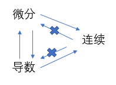
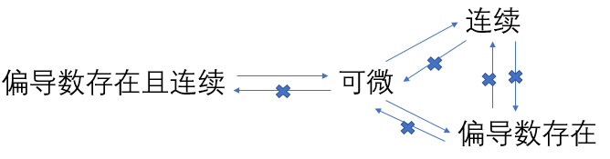

参考：
《高等数学》导数与微分
《高等数学》多元函数微分学
最近推导神经网络的前向传播和反向传播过程，经常会遇到有关导数、微分和梯度的内容，对它们的概念进行一次小结
- 导数
- 微分
- 偏导数
- 全微分
- 方向导数
- 梯度
导数
设函数$y=f(x)$在点$x_{0}$处的某个邻域$U(x_{0}, \delta)$内有定义，当自变量$x$在$x^{0}$处取得增量$\Delta x$（点$x+\Delta x$仍在该邻域内）时，相应地，函数$y=f(x)$取得增量$\Delta y=f(x_{0}+\Delta x)-f(x_{0})$，如果极限
存在，则称函数$y=f(x)$在点$x_{0}$处可导，并称这个极限值为函数$y=f(x)$在点$x_{0}$处的导数，记为
即
函数$f(x)$在点$x_{0}$处可导有时也说成$f(x)$在点$x_{0}$具有导数或导数存在
如果极限不存在，则说$y=f(x)$在点$x_{0}$处不可导
不可导情形
- 当$\Delta x\to 0$时，$\frac {\Delta y}{\Delta x}$没有稳定的变化趋势
- $\lim_{\Delta x\to 0}\frac {\Delta y}{\Delta x}=\infty $，此时也说导数为无穷大
左导数和右导数
设函数$y=f(x)$在点$x_{0}$的某个右邻域$[x_{0},x_{0}+\delta)$内有定义，如果极限
存在，则称此极限为函数$f(x)$在点$x_{0}$处的右导数，记作$f’_{+}(x_{0})
设函数$y=f(x)$在点$x_{0}$的某个右邻域$[x_{0},x_{0}+\delta)$内有定义，如果极限
存在，则称此极限为函数$f(x)$在点$x_{0}$处的左导数，记作$f’_{-}(x_{0})$
函数$y=f(x)$在点$x_{0}$处可导的充分必要条件是左导数$f’_{-}(x_{0})$和右导数$f’_{+}(x_{0})$都存在且相等
可导性和连续性
函数连续只是函数可导的必要条件，但不是充分条件，所以如果函数在某点不连续，则函数在该点必不可导
所以可导必连续，连续不一定可导，不连续一定不可导
四则运算法则
- $[u(x)+v(x)]’=u’(x)\pm v’(x)$
- $[u(x)v(x)]’=u’(x)v(x)+u(x)v’(x)$
- $[\frac {u(x)}{v(x)}]’=\frac {u’(x)v(x)-u(x)v’(x)}{v^{2}(x)}$
微分
设函数$y=f(x)$在某个区间内有定义，$x_{0}$及$x_{0}+\Delta x$在这个区间内，如果函数的增量$\Delta y=f(x_{0}+\Delta x)-f(x_{0})$可表示为
其中$A$是与$\Delta x$无关的常数，$o(\Delta x)$是比$\Delta x$高阶的无穷小，则称函数$y=f(x)$在点$x_{0}$可微，称$A\Delta x$为函数$y=f(x)$在点$x_{0}$相应于自变量增量$\Delta x$的微分，记作$dy|_{x=x_{0}}$或$df(x)|_{x=x_{0}}$，即
可微与可导
函数$y=f(x)$在点$x_{0}$处可微的充要条件是$f(x)$在点$x_{0}$处可导，且
所以可微必可导，可导必可微，二者等价
偏导数
设函数$z=f(x,y)$在点$(x_{0},y_{0})$的某一邻域内有定义，当$y$固定在$y_{0}$，而$x$在$x_{0}$处有增量$\Delta x$时，相应地函数有增量
如果
存在，则称此极限为函数$z=f(x,y)$在点$(x_{0},y_{0})$处对$x$的偏导数，记为
类似地，函数$z=f(x,y)$在点$(x_{0},y_{0})$处对$y$的偏导数定义为
记为
由偏导数的定义可知，求偏导数本质上是求一元函数的导数，函数对某一个变量求偏导数时，只需要把其余的自变量看成常数，因此一元函数微分法的求导法则全部适用于多元函数的偏导数
全微分
设二元函数$z=f(x,y)$在点$(x,y)$的某领域内有定义且偏导数$f_{x}(x,y), f_{y}(x,y)$存在，当变量$x,y$分别有增量$\Delta x, \Delta y$时，由一元函数增量与微分的关系，得
其中
分别成为二元函数对$x$和对$y$的偏增量，而
分别称为二元函数对$x$和对$y$的偏微分，将
称为函数$f(x,y)$在点$(x,y)$处的全增量
若函数$z=f(x,y)$在点$(x,y)$处的全增量可以表示为
其中，$A,B$不依赖于$\Delta x,\Delta y$，只与$x,y$有关，$\rho=\sqrt{(\Delta x)^{2}+(\Delta y)^{2}}$，$o(\rho )$是当$\rho \to 0$时比$\rho $高阶的无穷小量，则称函数$z=f(x,y)$在点$(x,y)$处可微，而称$A\Delta x+B\Delta y$为函数$z=f(x,y)$在点$(x,y)$处的全微分，记作
全微分、偏导数与连续性
如果函数$z=f(x,y)$在点$(x,y)$处可微，则函数在该点连续
所以连续是可微的必要条件，可微必连续
如果函数$z=f(x,y)$在点$(x,y)$处的两个偏导数$\frac{\partial z}{\partial x}, \frac{\partial z}{\partial y}$存在且连续，则函数在该点可微
所以偏导数存在且连续是可微的充分条件，可微必存在偏导数
偏导数和连续性没有关系
方向导数
设函数$z=f(x,y)$在$P_{0}(x_{0},y_{0})$的某一领域$U(P_{0})$内有定义，自$P_{0}(x_{0},y_{0})$点引射线$l$，在$l$上任取一点$P(x_{0}+\Delta x,y_{0}+\Delta y),P\in U(P_{0})$
若$P$沿$l$趋近于$P_{0}$时，即当
时，极限
存在，则称此极限为函数$f(x,y)$在点$P_{0}$处沿方向$l$的方向导数，记作$\frac{\partial f}{\partial l}|_{x=x_{0},y=y_{0}}$，即
方向导数和偏导数
如果函数$z=f(x,y)$在点$P_{0}(x_{0},y_{0})$的偏导数存在，则偏导数就是函数沿坐标轴正向的方向导数
梯度
设函数$z=f(x,y)$在平面区域$D$内具有一阶连续偏导数，则对于每一点$P_{0}(x_{0},y_{0})\in D$都可确定一个向量
该向量称为函数$z=f(x,y)$在点$P_{0}(x_{0},y_{0})$的梯度，记作$grad f(x_{0},y_{0})$或$\bigtriangledown f(x_{0},y_{0})$，即
梯度和方向导数
设$e_{l}=\{\cos \alpha,\cos \beta\}$是与方向$l$同方向的单位向量，则由方向导数的计算公式得
当$\theta = 0$，即方向$e_{l}$与梯度$grad f(x_{0},y_{0})$的方向相同时，方向导数$\frac{\partial f}{\partial l}|_{x=x_{0},y=y_{0}}=$取得最大值，也就是函数$f(x,y)$增加得最快，这个最大值就是梯度$grad f(x_{0},y_{0})$的模，即$|grad f(x_{0},y_{0})|$
所以梯度向量的方向是函数在该点的方向导数取得最大值的方向，梯度向量的模就是方向导数的最大值
小结
一元还是多元
导数和微分是一元函数定义
偏导数、全微分、方向导数和梯度是多元函数定义
导数、微分和连续性关系
导数和微分等价，可导必可微，可微必可导
连续性是导数的必要关系，可导必连续，不连续必不可导

偏导数、全微分和连续性关系
偏导数、全微分和连续性没有等价关系
连续性和偏导数存在是可微的充分条件
连续性是可微的必要条件，可微必连续
偏导数是可微的必要条件，可微必可偏导
连续性和偏导数没有关系

全微分、方向导数和梯度
参考：
全微分存在是方向导数存在的充分条件，全微分存在则方向导数存在
梯度方向是方向导数取得最大变化的方向，梯度模就是最大变化值